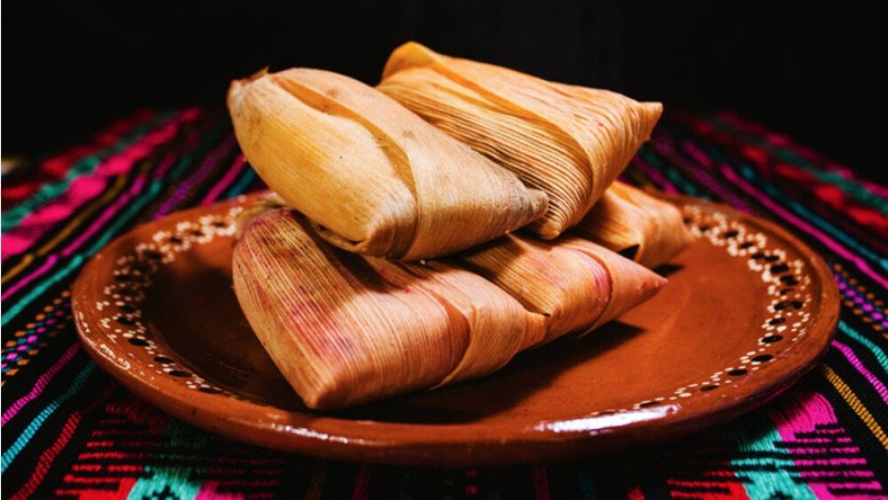

Tamales

Lista de ingredientes
- carne
- huevo
- pimiento rojo
- diente de ajo
- chalas
- pasas de uva
Preparacion
- hervimos toda la verdura
- troceamos la carne y la hervimos
- hervimos el zapallo
- realizamos un pure
- agregamos de a poco la harina maiz
- juntamos la carne con la verdura picada y condimentamos
- luego ponemos sobre la hoja de chala pure y arriba el preparado de carne y verduras
- cerramos y atamos con hilo
- hervir 45 minutos
- listo para servir